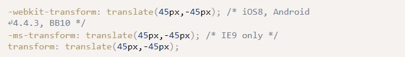

Week 8 Notes
HTML5 & CSS3 for the Real World
Chapter 8: Transforms & Transitions
Nowadays, CSS3 can handle certain tasks without JS needing to be written. It comes with features like tilt, scale, move, and flip.
- Transform is a CSS3 property that lets you translate, rotate, scale, and/or skew any element on the page
- An element's appearance can be manipulated using the transform functions
- The value of the transform property is one or more transform functions that are applied in the order they're provided
- Translation is one of the transform functions, and it allows you to move elements left, right, up, or down
- transform: translate(45px, -45px);
- Transforms require specific prefixing from the browser in order to work
- To make code work, you would need to include some special code
- 
- When transforming an element, only declare transform once (the cascade would have the last transform declaration override
- Translation is one of the transform functions, and it allows you to move elements left, right, up, or down
- transform: translate(45px, -45px);
- When using translation, you're moving elements without impacting the flow of the document
- Unlike "position: relative" (position an element either against its current position, a parent, or other ancestor), translation can only move relative to the current position
- You can use different code for when you only want to translate in one direction (either horizontally or vertically)
- transform: translateX(45px); transform: translateY(-30px);
- The scale function scales an element through arguments in the parameters
- scale(x,y) takes the defined factors and scales horizontally, then vertically
- If only one value is provided, it will scale the element while maintaining the original aspect ratio
- Much like translation, you can scale based on only vertical or horizontal direction
- scaleX(x) or scaleY(y)
- Scaling will only grow outwards from or shrink towards the element's cycle
- This default behavior can be changed if you use "transform-origin"
- Scaling also has no impact on document flow
- scale(x,y) takes the defined factors and scales horizontally, then vertically
- The rotate function rotates an element around the point of origin by a specified angle value
- The default point of origin is the element's center
- You can define an angle value with degrees, grads, radians, or turns, but you generally use degrees
- transform: rotate(40deg)
- The skew(x,y) function specifies a skew along the x and y axes
- X skews on the x axis, and Y skews on the y axis, and if the second parameter is omitted, the skew will only occur on the x axis
- transform: skew(15deg, 4deg)
- This results in the following example
- Skewed Example
- X skews on the x axis, and Y skews on the y axis, and if the second parameter is omitted, the skew will only occur on the x axis
- The origin of the transform can be changed from the default (center of the element) to something else using transform-origin
- It looks like this:
- transform-origin: 10% 10%;
- Browser support for transform-origin is the same for transform
- It looks like this:
- Be careful when choosing your order of transform functions
- If you decide to rotate an element before translating, it will look differently than if you would translate before rotating
Definitions
- :
Questions
- Would you only use the call() and apply() method with objects? Why else would you use it and when?
- Why would you want to define a function only to have it rewrite itself? When is this used in a professional setting?